Highlighted author(s): Jamir Marino
Authors: Luis Fernando dos Prazeres, Hossein Hosseinabadi, Jamir Marino
Type: theory · Category: other · PDF: https://arxiv.org/pdf/2605.05343v1
Analysis basis: full PDF text, analyzed in chunks
Topic relevance: 🔥 Dicke superradiance 4/5 · 🔥 correlated / nonlocal dissipation 4/5 · 🔥 entanglement & information structure 4/5 · 🔥 scars & prethermalization 4/5 · driven-dissipative phase transition 3/5 · free-space correlated emission 3/5 · methods for driven-dissipative 3/5 · non-equilibrium dynamics 3/5 · quantum measurements 2/5
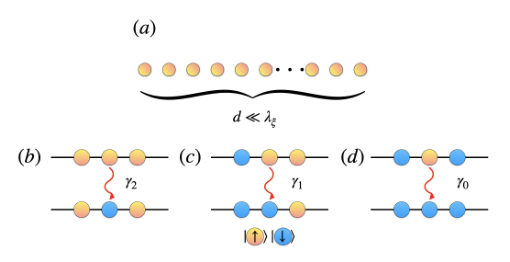
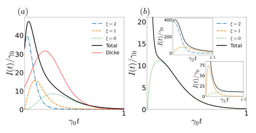
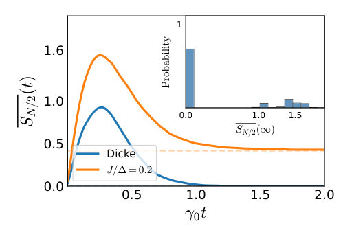
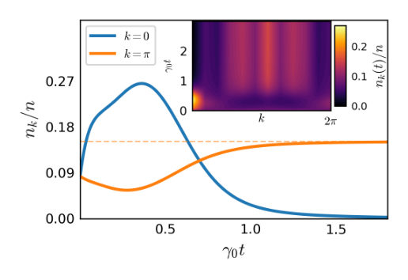
Summary. This paper introduces 'kinetically constrained superradiance,' a phenomenon where atomic interactions split superradiant decay into multiple frequency-dependent channels. This mechanism breaks permutation symmetry, allowing the system to bypass the trivial steady state of standard Dicke superradiance and instead stabilize long-lived, entangled many-body states. It demonstrates that dissipation alone can be used as a resource for engineering correlated quantum states.
Why it may be interesting. It presents a novel mechanism for dissipative state engineering where purely dissipative dynamics (without coherent driving) can generate and stabilize complex, many-body entangled states, which is highly relevant for quantum memory and open quantum systems.
Main problem. How to overcome the limitation of conventional Dicke superradiance, where permutation symmetry leads to a trivial steady state, by using configuration-dependent energy shifts to engineer long-lived entanglement and trapped excitations.
Main result. The discovery of kinetically constrained superradiance, where interactions split superradiance into multiple frequency-resolved decay channels, allowing the system to reach a non-trivial steady state with stabilized, long-lived entanglement and trapped excitations.
Method. The authors use a Lindblad master equation formalism derived via the Born-Markov and Redfield approximations, supplemented by stochastic quantum trajectory simulations to study entanglement and steady-state properties.
Model / system. A one-dimensional array of N two-level atoms with nearest-neighbor interactions (Hamiltonian includes a transition energy delta and interaction strength J) coupled to a vacuum electromagnetic field in a subwavelength arrangement.
Key observables. Frequency-resolved emission rates (I_xi), total emission intensity, peak intensity, burst width, delay time, steady-state excitation density, and half-chain von Neumann entropy.
Important parameters / regimes. Interaction strength (J), transition energy (delta), number of atoms (N), and the regime of strong interaction (J >= delta) versus weak interaction (J << delta).
Assumptions / limitations. Subwavelength arrangement of atoms (d << lambda), Born-Markov approximation, and the use of the Rotating-Wave/Secular approximation when interaction-induced splittings are large.
Figures summary. Figure 1 shows the schematic of collective coupling and conditional spin-flip processes; Figure 4 compares entanglement entropy evolution between constrained and Dicke superradiance; Supplementary figures show frequency-resolved emission components, scaling of burst parameters, and steady-state excitation density.
Paper structure. The paper introduces the concept of kinetically constrained superradiance, provides a microscopic derivation of the frequency-resolved Lindblad master equation, analyzes the resulting sequential relaxation dynamics and scaling laws, and concludes with an investigation of steady-state entanglement and excitation trapping.
We introduce kinetically constrained superradiance, a form of cooperative emission in which interactions imprint configuration-dependent energy shifts on optical transitions, splitting Dicke superradiance into multiple, frequency-resolved collective decay channels. Each channel selectively radiates from distinct many-body spin configurations, generating a hierarchy of dissipative time scales and sequential relaxation dynamics. Unlike conventional superradiance, where permutation symmetry enforces relaxation to a trivial steady state, configuration-selective emission can trap finite-momentum spin-wave excitations and stabilize long-lived entanglement. Remarkably, these correlations are generated purely by dissipation in the absence of entangling coherent dynamics. Our results point to modern superradiant experiments as scalable resources for dissipative engineering of correlated quantum states.
Authors: Yunxiang Liao, Max Matheussen, Xinghai Zhang
Type: theory · Category: statistical mechanics · PDF: https://arxiv.org/pdf/2605.05306v1
Analysis basis: full PDF text, analyzed in chunks
Topic relevance: 🔥 measurement-induced transitions 5/5 · 🔥 Keldysh / 2PI / non-Gaussian methods 4/5 · 🔥 driven-dissipative phase transition 4/5 · 🔥 entanglement & information structure 4/5 · non-equilibrium dynamics 3/5 · non-equilibrium universality 3/5 · quantum measurements 3/5 · methods for driven-dissipative 2/5
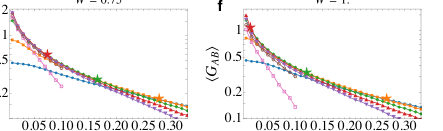
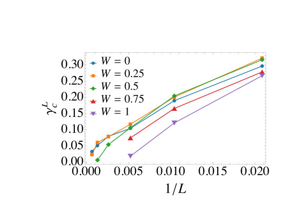
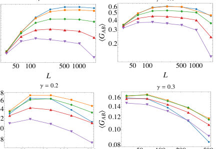
Summary. This paper demonstrates that quenched disorder does not alter the fundamental existence of measurement-induced phase transitions in fermionic systems. While disorder modifies the effective parameters of the system, the transition remains absent in 1D and present in higher dimensions. The study provides a unified effective field theory describing both clean and disordered monitored fermions.
Why it may be interesting. This paper is highly relevant for researchers in open quantum systems and many-body dynamics as it provides a rigorous field-theoretic proof that static disorder cannot stabilize a measurement-induced critical phase in 1D, clarifying the robustness of MIPTs.
Main problem. The study investigates how quenched disorder affects measurement-induced phase transitions (MIPTs) in noninteracting fermionic systems, specifically whether disorder can induce or stabilize a transition in 1D.
Main result. The authors find that disorder does not change the existence of the MIPT; a transition exists in d > 1 between an area x log law and an area law phase, but the 1D system remains strictly in an area law phase. The effective field theory (NLsigmaM) for disordered fermions is identical to the clean case, with disorder only modifying model parameters.
Method. The work employs a Replica Keldysh Path Integral approach to derive an effective two-matrix nonlinear sigma model (NLsigmaM) and uses Renormalization Group (RG) analysis alongside large-scale numerical simulations of a quantum projection protocol.
Model / system. A d-dimensional noninteracting fermionic system subject to both quenched on-site disorder and continuous monitoring of the local particle density.
Key observables. Von Neumann entanglement entropy, particle number cumulants, particle number covariance, and the average-density response function.
Important parameters / regimes. Measurement strength (kappa), disorder strength (related to elastic scattering time), spatial dimension (d), and measurement-induced vs. disorder-induced decay rates (gamma_m and gamma_D).
Assumptions / limitations. The system is noninteracting (free fermions), the initial state is Gaussian, and the derivation assumes a continuum limit and neglects certain nonlocal-in-time massive modes.
Figures summary. Figure 1 shows steady-state covariance vs. measurement rate for various disorder strengths and system sizes, with crossing points indicating the phase behavior. Figure 2 tracks the drift of finite-size crossing points toward zero measurement rate to demonstrate the absence of a transition in 1D.
Paper structure. The paper introduces the problem of MIPT in disordered systems, develops a Keldysh field theory and NLsigmaM derivation, performs RG analysis to predict phase stability, and concludes with numerical verification in 1D.
Measurement-induced phase transitions are nonequilibrium transitions between phases characterized by distinct entanglement scaling behaviors, driven by the competition between unitary dynamics and measurements. Despite recent numerical efforts, how quenched disorder affects these transitions remains unclear. In this work, we study a $d$-dimensional noninteracting fermionic system subject to both quenched disorder and continuous monitoring of the local particle density, and derive an effective field theory describing its long-time universal behaviors. We find that the system is governed by the same nonlinear sigma model as in the case of clean monitored fermions, with disorder entering only through a modification of model parameters. This result suggests that the presence or absence of a measurement-induced phase transition is unaffected by the introduction of disorder: in spatial dimensions d>1, a transition occurs between an area x log law phase and an area law phase, whereas in d=1, the system exhibits only an area law phase and no transition. Numerical results further demonstrate that both clean and disordered one-dimensional free fermions exhibit area-law behavior when the system size is large enough.
Authors: Jean-Yves Desaules, Aron Kerschbaumer, Marko Ljubotina, Maksym Serbyn
Type: theory · Category: other · PDF: https://arxiv.org/pdf/2605.05297v1
Analysis basis: full PDF text, analyzed in chunks
Topic relevance: 🔥 scars & prethermalization 5/5 · 🔥 Rydberg arrays 4/5 · 🔥 non-equilibrium dynamics 4/5 · analog quantum simulation 3/5 · entanglement & information structure 3/5 · exotic spin models in light-matter 3/5
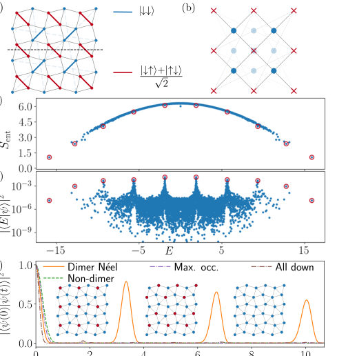
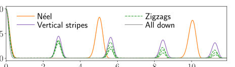
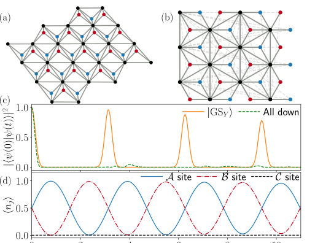
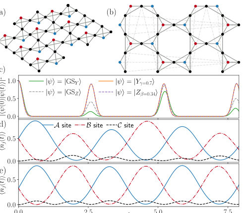
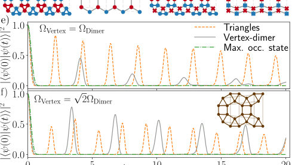
Summary. This paper presents a new graph-theoretic method to find and classify quantum many-body scars in frustrated Rydberg atom arrays. It identifies two distinct mechanisms—Type-I and Type-II—that allow non-thermal dynamics to persist even in non-bipartite lattices. The results offer a roadmap for using complex lattice geometries to control and stabilize many-body quantum dynamics.
Why it may be interesting. It provides a systematic, dimension-insensitive way to engineer non-thermal dynamics in complex, frustrated geometries, which is highly relevant for designing quantum simulators and protecting information from thermalization.
Main problem. Investigating whether and how quantum many-body scars (QMBS) survive in frustrated, non-bipartite Rydberg atom arrays and identifying the initial states that lead to non-thermal dynamics.
Main result. The authors introduce a graph-theoretic framework that identifies two distinct scarring mechanisms: Type-I (using local entanglement to overcome mild frustration) and Type-II (using strong frustration to pin part of the lattice).
Method. A graph-theoretic approach using vertex partitioning and clique covers, combined with algebraic construction of an approximate su(2) algebra and numerical simulations of return fidelity.
Model / system. Rydberg atom arrays in various 2D and 3D geometries (e.g., hexagonal, Shastry-Sutherland, asanoha, kagome, and triangular lattices) described by the PXP model in the blockade regime.
Key observables. Return fidelity, entanglement entropy, sublattice occupation, and overlap with dimer Neel states.
Important parameters / regimes. Levels of lattice frustration, connectivity/coordination numbers of sublattices, and driving frequency adjustments.
Assumptions / limitations. The framework assumes that the dynamics can be captured by an approximate su(2) algebra and that the lattice can be partitioned into specific sublattices (A, B, and C).
Figures summary. Fig 1: Shastry-Sutherland lattice partitioning and return fidelity. Fig 2: Type-I scarring in hexagonal lattices with different dimer covers. Fig 3: Type-II scarring in the asanoha lattice. Fig 4: Ruby lattice dynamics and frequency-stabilization strategy. Fig 5: Type-II scarring in pyrochlore lattices. Fig 6: Comparison of scarring robustness in 1D chains, PXP ladders, and modified lattices. Fig 7: Comparison of scarring in Kagome, FCS, and triangular lattices.
Paper structure. Introduction of the problem, presentation of the graph-theoretic framework, detailed analysis of Type-I scarring mechanisms, analysis of Type-II scarring mechanisms, investigation of stability and robustness in various geometries, and discussion of experimental implications.
Quantum many-body scars in Rydberg atom arrays have thus far only been observed on bipartite lattices, leaving open the question of whether and how they survive frustration, and what the appropriate initial states are that lead to nonthermal dynamics. We introduce a graph-theoretic framework to find suitable candidates for scarring on arbitrary lattices. Our framework predicts two distinct mechanisms: type-I scars generalize the bipartite case by using locally entangled states to overcome mild frustration, while type-II scars exploit strong frustration to pin part of the lattice, leaving the remainder to oscillate freely. We numerically demonstrate both mechanisms and uncover an exponential family of scarred trajectories on the hexagonal lattice that can encode information protected from thermalization. Our results establish scarring as a generic feature of Rydberg systems beyond one dimension and provide an experimentally accessible route to systematically probing non-thermal dynamics in quantum simulators.
Authors: Erick Parra Verde, Kevin P. Mours, Johannes Zeiher, Ana Hudomal, Jad C. Halimeh
Type: both · Category: other · PDF: https://arxiv.org/pdf/2605.05296v1
Analysis basis: full PDF text, analyzed in chunks
Topic relevance: 🔥 scars & prethermalization 5/5 · 🔥 Rydberg arrays 4/5 · 🔥 non-equilibrium dynamics 4/5 · analog quantum simulation 3/5 · entanglement & information structure 3/5 · exotic spin models in light-matter 2/5
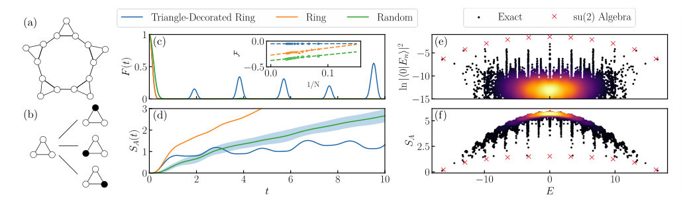
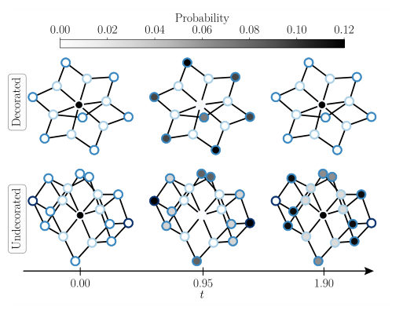
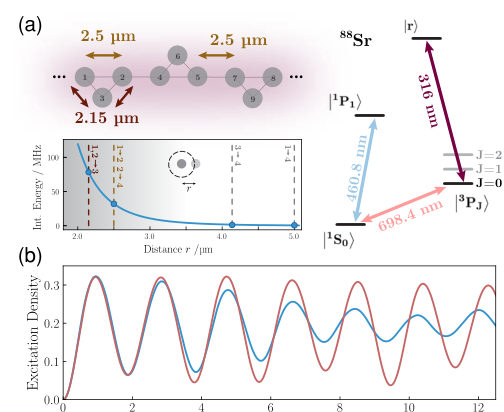
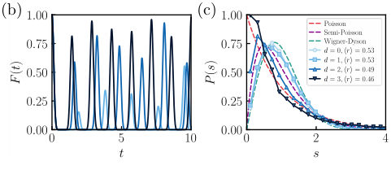
Summary. The paper shows that changing the geometry of a lattice from a 1D chain to a triangle-decorated structure can induce quantum many-body scars. This happens because the new geometry eliminates certain pathways in the Hilbert space, allowing for periodic revivals and slow entanglement growth. The findings are directly applicable to controlling dynamics in programmable Rydberg atom simulators.
Why it may be interesting. This work provides a new design principle for engineering non-ergodic dynamics using only lattice connectivity, which is highly relevant for controlling many-body dynamics and information scrambling in programmable Rydberg atom arrays.
Main problem. Can lattice geometry alone be used as a control knob to induce and stabilize quantum many-body scars (QMBS) in otherwise thermalizing systems without requiring fine-tuned initial states or Hamiltonian perturbations?
Main result. The authors demonstrate that a triangle-decorated lattice geometry enhances scarring by restructuring the constrained Hilbert space into hypercube subgraphs, which stabilizes an emergent approximate su(2) algebra and suppresses the 'bridges' that cause thermalization.
Method. The study uses Exact Diagonalization (ED) for numerical simulations and an algebraic approach involving an approximate su(2) algebra and subspace variance analysis, alongside a proposed experimental implementation using Rydberg atom arrays.
Model / system. The study focuses on the PXP model, which describes Rydberg atom arrays in the nearest-neighbor blockade regime, specifically comparing a standard 1D chain to a quasi-1D triangle-decorated lattice.
Key observables. Fidelity revivals F(t), fidelity density, bipartite von Neumann entanglement entropy, excitation density, and energy-level spacing ratio.
Important parameters / regimes. Rydberg blockade radius of 3.5 micrometers, interatomic spacing of 2.5 micrometers, and the transition from 1D chains to triangle-decorated lattices.
Assumptions / limitations. The PXP model is assumed to be a valid approximation for the Rydberg Hamiltonian in the blockade regime; the study focuses on the polarized state specifically.
Figures summary. Figure 1 shows the triangle-decorated lattice geometry and its dynamics (revivals and entanglement); Figure 4 illustrates unit cells with d decorations, showing how increasing decorations enhances revivals but leads toward integrability.
Paper structure. The paper introduces the problem of stabilizing QMBS, presents the triangle-decorated geometry, analyzes the mechanism via Hilbert space restructuring and su(2) algebra, proposes an experimental Rydberg implementation, and discusses the scaling of the effect with unit cell size.
Quantum many-body scars enable persistent non-ergodic dynamics in otherwise thermalizing systems, yet their stabilization typically relies on fine-tuned initial states or engineered Hamiltonian perturbations. Here we show that lattice geometry alone can serve as a powerful and experimentally accessible control knob for inducing and enhancing scarring. By transforming a one-dimensional chain into a quasi-one-dimensional triangle-decorated lattice, we find that the fully polarized state -- normally thermalizing in the PXP model -- exhibits pronounced fidelity revivals, slow entanglement growth, and strong overlap with a tower of weakly entangled eigenstates. We trace this behavior to a geometry-induced restructuring of the constrained Hilbert space, whereby the adjacency graph decomposes into hypercube subgraphs that enforce coherent population transfer and stabilize an emergent approximate $\mathrm{su}(2)$ algebra. We propose a direct implementation in programmable arrays of tweezer-trapped Rydberg atoms, where the triangle-decorated geometry can be realized using spatial light modulators and the resulting scarring dynamics probed via time-resolved measurements of excitation density. Our results establish lattice connectivity as a design principle for engineering non-ergodic dynamics in constrained quantum systems.
Authors: Yiming Huang, Jiaxing Song, Xiaoxia Cai, Xiao Yuan
Type: both · Category: quantum information and computing · PDF: https://arxiv.org/pdf/2605.06178v1
Analysis basis: full PDF text, analyzed in chunks
Topic relevance: 🔥 analog quantum simulation 5/5 · 🔥 Rydberg arrays 4/5 · QC/QI experiment 3/5 · entanglement & information structure 3/5 · exotic spin models in light-matter 3/5 · non-equilibrium dynamics 3/5
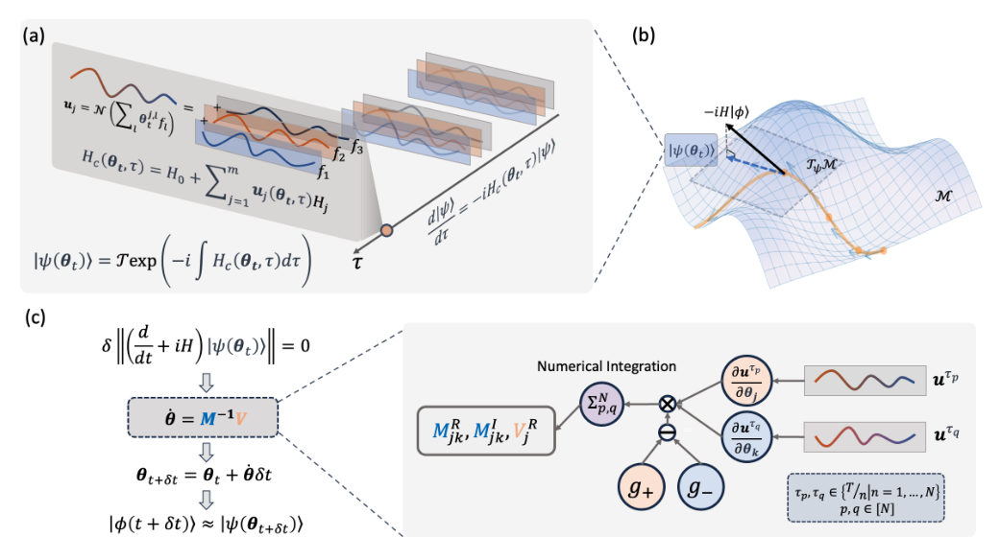
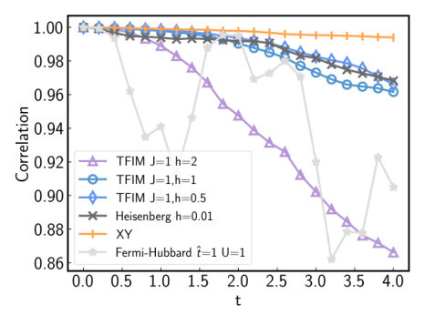
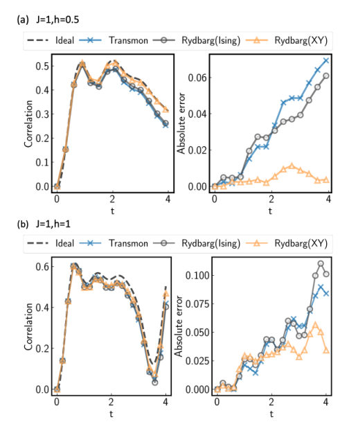
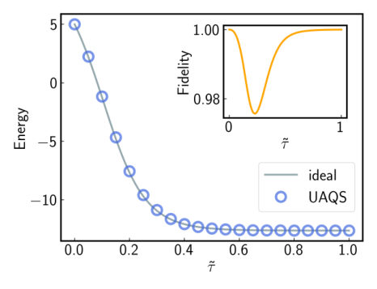
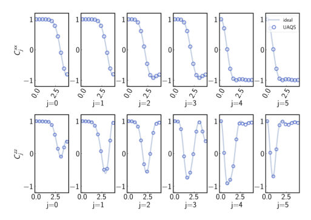
Summary. The paper introduces Universal Analog Quantum Simulation (UAQS), a method to make fixed-interaction analog quantum simulators programmable. By using optimized continuous-time control pulses, it allows hardware to emulate Hamiltonians beyond its native interaction structure. This approach is shown to be effective for simulating complex dynamics and preparing ground states in systems like Rydberg atoms and superconducting circuits.
Why it may be interesting. It provides a systematic way to extend the utility of existing analog hardware (like Rydberg arrays) to simulate a much wider range of Hamiltonians without the heavy overhead of full digital gate decomposition.
Main problem. Analog quantum simulators are limited by fixed hardware-defined interaction structures, which restricts their programmability and ability to simulate arbitrary Hamiltonians.
Main result. The UAQS framework successfully transforms fixed-interaction analog devices into programmable simulators capable of accurately reproducing complex many-body dynamics, including real-time and imaginary-time evolution.
Method. A hybrid framework using continuous-time quantum control optimization and McLachlan's variational principle to project target dynamics onto a low-dimensional manifold of states.
Model / system. The framework is demonstrated on superconducting circuits (transmon arrays) and Rydberg-atom arrays, simulating models such as the Transverse-Field Ising Model (TFIM), XY model, Heisenberg model, and Fermi-Hubbard model.
Key observables. Nearest-neighbor correlations, fidelity, spectral functions, Out-of-Time-Order Correlators (OTOCs), and ground-state energy.
Important parameters / regimes. Control pulse amplitudes, evolution time (T), number of tunable parameters (d), and control strength (theta_max * T).
Assumptions / limitations. Assumes the Hamiltonian can be decomposed into controllable Pauli strings and that the initial state has non-zero overlap with the target state.
Figures summary. Figure 1 shows the UAQS construction and state trajectory; Figure 2 compares simulated vs exact TFIM correlations; Figures 6-9 benchmark expressibility, entanglement, and OTOCs; Figure 13 shows H2 ground-state energy convergence.
Paper structure. The paper identifies the limitations of analog hardware, introduces the UAQS mathematical framework and variational principle, provides estimation protocols for control parameters, demonstrates numerical validity on various many-body models, and benchmarks performance against gate-based circuits.
Analog quantum simulators emulate complex many-body dynamics through native continuous-time evolution under hardware-defined interactions. Yet once a platform is specified, its interaction structure is largely fixed by the underlying hardware, restricting the Hamiltonians that can be realized and limiting programmability. Here we introduce universal analog quantum simulation (UAQS), a hybrid framework that systematically expands the range of accessible quantum evolutions within a given analog platform. UAQS employs optimized continuous-time control fields to engineer target dynamics directly, avoiding decomposition into discrete gate sequences. By preserving native analog evolution while extending the set of achievable Hamiltonians, UAQS transforms fixed-interaction analog devices into programmable simulators. Numerical studies on representative architectures, including superconducting circuits and Rydberg-atom arrays, show that UAQS accurately reproduces non-trivial many-body dynamics beyond the intrinsic interaction structure of the hardware. These results establish UAQS as a practical route toward programmable analog quantum simulation.
Authors: Rong-Can Yang, Gang Liu, Gen Li, Jie Li
Type: theory · Category: quantum information and computing · PDF: https://arxiv.org/pdf/2605.06297v1
Analysis basis: full PDF text, analyzed in chunks
Topic relevance: 🔥 spintronics-quantum-optics interface 5/5 · correlated / nonlocal dissipation 3/5 · entanglement & information structure 3/5 · Tavis-Cummings & cavity-many-emitter 2/5 · non-equilibrium dynamics 2/5 · quantum measurements 2/5
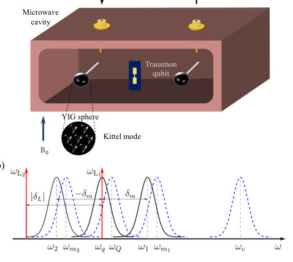
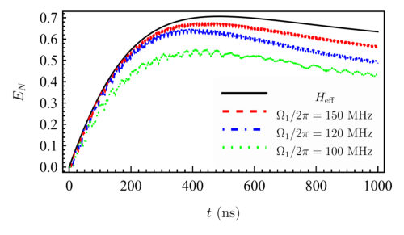
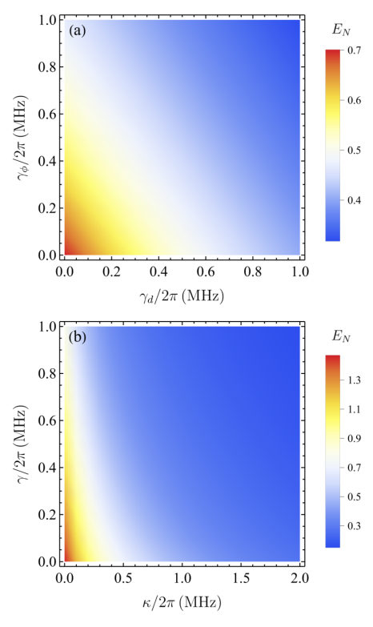
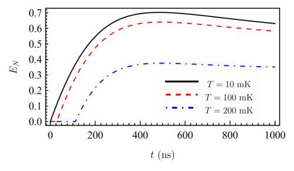
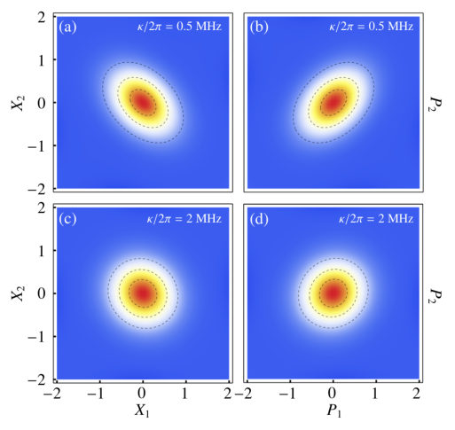
Summary. The paper proposes a method to entangle two massive magnon modes in separate YIG spheres using a superconducting qubit driven by two microwave tones. It shows that this protocol can create entanglement involving a huge number of spins, offering a way to study macroscopic quantum phenomena.
Why it may be interesting. It provides a theoretical framework for generating macroscopic entanglement in a hybrid platform, which is highly relevant for studying the quantum-to-classical transition and testing unconventional decoherence theories in open quantum systems.
Main problem. The paper aims to propose a protocol for generating and detecting macroscopic entanglement between two magnon modes in separate YIG spheres.
Main result. The authors demonstrate that a two-tone driving of a superconducting qubit can induce a two-mode squeezing interaction, achieving significant entanglement involving over 10^18 spins.
Method. The study uses the James-Jerke formula and adiabatic elimination of the cavity mode to derive an effective Hamiltonian, then solves the Lindblad master equation to simulate entanglement dynamics and Wigner function tomography.
Model / system. A hybrid cavity-magnon-qubit system consisting of two millimeter-sized YIG spheres and one transmon-type superconducting qubit, all placed within a common 3D microwave cavity.
Key observables. Logarithmic Negativity (LN), joint Wigner functions, and joint magnon-number parity.
Important parameters / regimes. Magnon frequencies around 5.8 GHz, qubit frequency around 5.8 GHz, coupling strengths in the MHz range, and temperatures below 100 mK.
Assumptions / limitations. Large detuning of the cavity mode from the qubit and magnons (adiabatic elimination), and the validity of the Rotating-Wave Approximation (RWA).
Figures summary. Fig 1 shows the system schematic; Fig 2 compares entanglement evolution between effective and original Hamiltonians; Fig 3 shows entanglement sensitivity to dissipation; Fig 4 shows temperature effects; Fig 5 displays joint Wigner functions for low and high decay rates.
Paper structure. The paper introduces the system and problem, derives the effective Hamiltonian via two-tone driving and adiabatic elimination, performs numerical simulations of entanglement dynamics and noise sensitivity, proposes a detection scheme via Wigner function tomography, and concludes with the implications for macroscopic quantum mechanics.
The cavity-mediated coupling between magnons in an yttrium-iron-garnet (YIG) sphere and a superconducting qubit has recently been demonstrated as a new platform for preparing macroscopic quantum states. Here, based on this system, we propose to entangle two magnon modes in two YIG spheres by driving the qubit with a two-tone field and by appropriately choosing the frequencies and strengths of the two driving fields. We show that strong entanglement can be achieved with fully feasible parameters. We further provide a detection scheme for experimentally verifying the entanglement. Our results indicate that macroscopic entanglement between two magnon modes in two millimeter-sized YIG spheres, involving more than $10^{18}$ spins, can be realized using currently available parameters, which finds promising applications in fundamental studies, such as macroscopic quantum mechanics and the test of unconventional decoherence theories.
Authors: Fan Zhang, Chiao Wang, H. T. Quan
Type: theory · Category: statistical mechanics · PDF: https://arxiv.org/pdf/2605.06436v1
Analysis basis: full PDF text, analyzed in chunks
Topic relevance: 🔥 non-equilibrium dynamics 4/5 · 🔥 non-equilibrium universality 4/5 · Rydberg arrays 3/5 · analog quantum simulation 2/5 · exotic spin models in light-matter 2/5 · scars & prethermalization 2/5
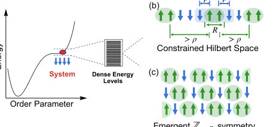
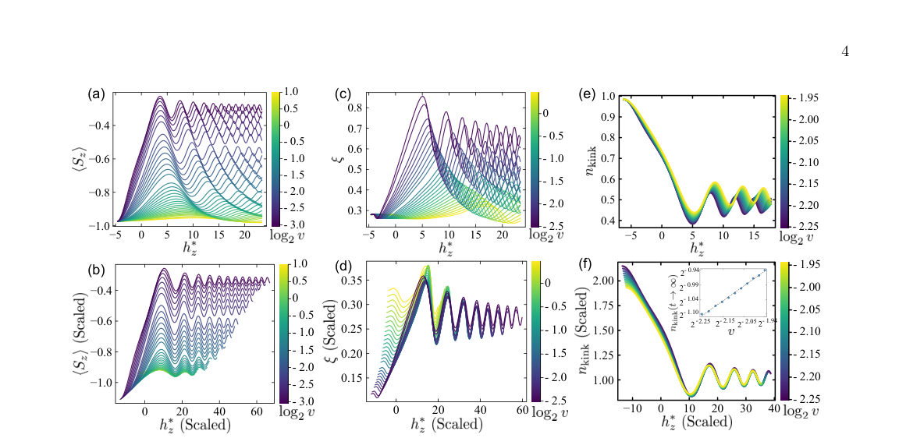
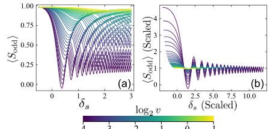
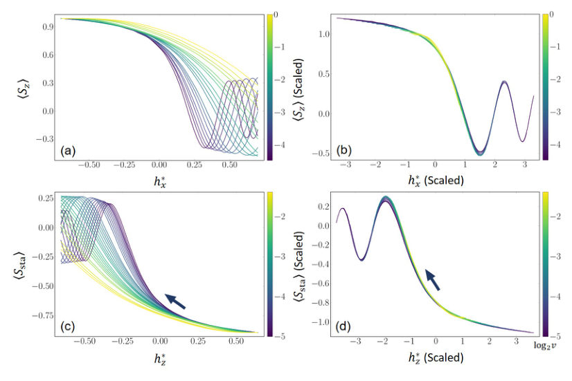
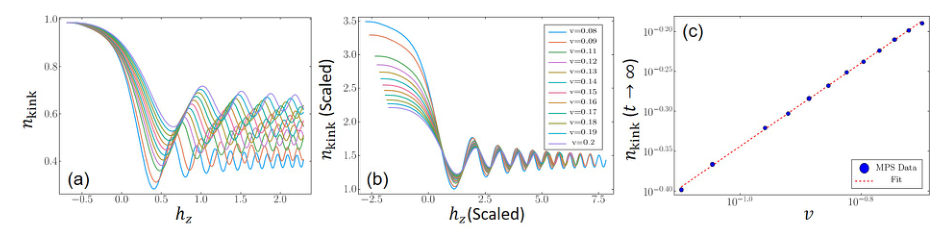
Summary. This paper demonstrates that second-order quantum criticality can emerge at the spinodal point of first-order quantum phase transitions due to emergent symmetries in a decoupled Hilbert subspace. By mapping FOQPT dynamics to effective SOQPT models, the authors bridge the gap between different types of phase transition dynamics. This discovery explains the presence or absence of universal scaling in various quantum many-body systems.
Why it may be interesting. It provides a universal mechanism for the emergence of second-order criticality from first-order transitions, which is highly relevant for understanding the dynamics of Rydberg atom arrays and other programmable quantum simulators.
Main problem. Understanding how universality and scaling emerge in the non-equilibrium dynamics of first-order quantum phase transitions (FOQPTs), specifically addressing why some FOQPTs exhibit criticality while others do not.
Main result. The authors show that quantum criticality can emerge around the quantum spinodal point of FOQPTs where metastability disappears, driven by an effective Hamiltonian with emergent discrete translational symmetry.
Method. The study employs a microscopic theory using Schrieffer-Wolff transformations to derive effective Hamiltonians, alongside numerical techniques like TDVP, DMRG, and the Kibble-Zurek mechanism (KZM) for scaling analysis.
Model / system. The framework is validated using the 1D quantum tilted Ising model and the PXP model with a staggered field, as well as a 1D next-nearest-neighbor (NNN) tilted Ising model.
Key observables. Density of topological defects (kink density), correlation length, longitudinal and staggered magnetization, and Z3 order parameter.
Important parameters / regimes. Quench velocity (v), longitudinal and transverse fields (hz, hx), interaction range (rho), and the spinodal point (lambda_sp).
Assumptions / limitations. The analysis assumes the driving timescale significantly exceeds the intrinsic microscopic evolution timescale and treats the narrow BKT floating phase in the NNN model as a single effective second-order transition.
Figures summary. Figure 1 illustrates the energy landscape and formation of constrained Hilbert space; Figure 3 shows the energy crossover and magnetization jumps in the PXP model; Figure 5 demonstrates scaling collapse of magnetization and correlation length in the NNN Ising model.
Paper structure. The paper introduces the problem of FOQPT dynamics, presents a microscopic theory for emergent criticality at the spinodal point, validates this via the tilted Ising model, compares it to the non-critical staggered PXP model, and extends the analysis to NNN models with emergent Z3 symmetry.
Universality and scaling are hallmarks of second-order phase transitions but are generally unexpected in first-order quantum phase transitions (FOQPTs). We present a microscopic theory showing that quantum criticality can emerge around the quantum spinodal point of FOQPTs where metastability disappears. We demonstrate that, at this instability, resonant local excitations dynamically decouple a Hilbert subspace characterized by an emergent discrete translational symmetry. Projecting the original Hamiltonian onto this subspace yields an effective Hamiltonian that exhibits a genuine second-order quantum phase transition (SOQPT) and the Kibble-Zurek scaling. We validate this framework in the tilted Ising chain which breaks Z_2 symmetry, and predict the absence of criticality in the staggered-field PXP model. This work indicates that the FOQPT dynamics is usually governed by an emergent critical point around the quantum spinodal point. Our study establishes a bridge between the dynamics of the FOQPT and SOQPT, and thus sheds new light on the long-standing conundrum of the dynamics of the FOQPT.
Authors: Seiki Saito
Type: theory · Category: statistical mechanics · PDF: https://arxiv.org/pdf/2605.05604v1
Analysis basis: full PDF text, analyzed in chunks
Topic relevance: 🔥 non-equilibrium dynamics 4/5 · methods for driven-dissipative 3/5 · Frenkel-Kontorova 2/5 · correlated / nonlocal dissipation 2/5 · entanglement & information structure 2/5 · non-equilibrium universality 2/5 · scars & prethermalization 2/5
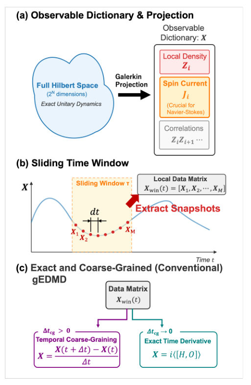
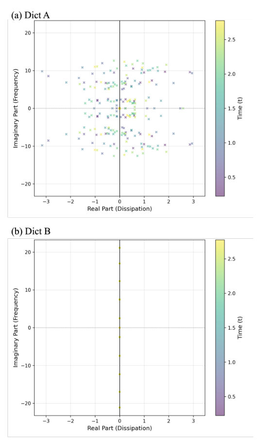
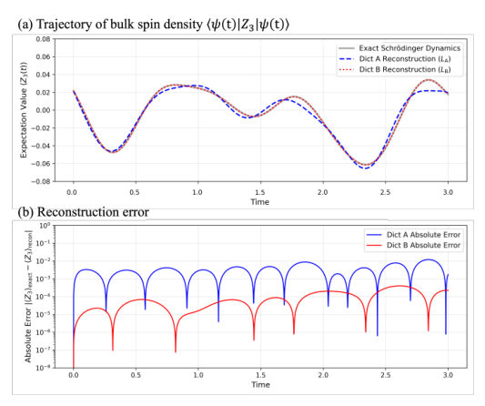
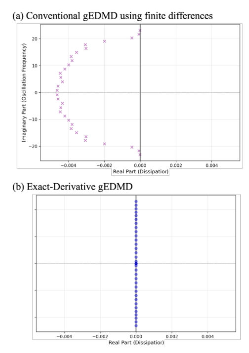
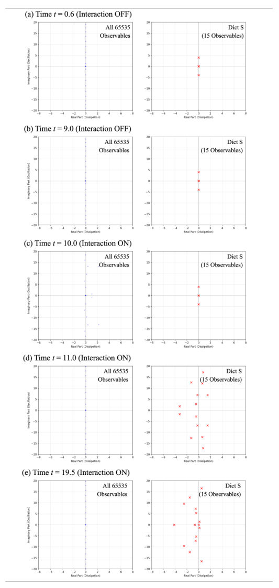
Summary. This paper demonstrates that macroscopic friction and viscosity in isolated quantum systems are emergent phenomena resulting from temporal coarse-graining. By using a data-driven gEDMD approach on a chaotic XXZ spin chain, the author shows that while microscopic dynamics remain reversible, a finite observation timescale averages out fluctuations to establish a steady, dissipative fluid regime.
Why it may be interesting. It provides a fundamental link between unitary quantum evolution and classical-like dissipative hydrodynamics, specifically identifying the observer's temporal resolution as the mechanism for the emergence of irreversibility.
Main problem. How macroscopic irreversible hydrodynamics, such as friction and viscosity, emerge from the reversible, unitary dynamics of isolated quantum many-body systems.
Main result. Macroscopic friction and viscosity are not intrinsic microscopic properties but emerge through temporal coarse-gasting, which averages out reversible microscopic fluctuations.
Method. A data-driven framework combining exact-derivative generalized Extended Dynamic Mode Decomposition (gEDMD) with the Mori-Zwanzig projection formalism.
Model / system. A one-dimensional, chaotic XXZ spin-1/2 quantum spin chain with nearest-neighbor and next-nearest-neighbor interactions to break integrability.
Key observables. Local spin density, spin currents, and higher-order correlations (up to 3-site densities).
Important parameters / regimes. Temporal coarse-graining scale (delta t_cg), mechanical elasticity (c^2), macroscopic friction (gamma), and kinematic viscosity (nu).
Assumptions / limitations. The use of a restricted dictionary of observables effectively acts as a spatial projection, and the system is assumed to be in a chaotic, thermalizing regime.
Figures summary. Figure 2 shows the Liouvillian spectrum dependence on dictionary completeness; Figure 3 compares exact-derivative vs. finite-difference gEDMD; Figure 4 shows predictive accuracy of trajectories; Figure 8 shows the time evolution of hydrodynamic coefficients; Figure 9 plots coefficients against the coarse-graining scale.
Paper structure. The paper introduces the problem of emergent hydrodynamics, presents the gEDMD/Mori-Zwanzig framework, validates the method using dictionary completeness, demonstrates the role of temporal resolution in establishing friction, and analyzes the limits of the fluid model.
Understanding the emergence of macroscopic irreversible hydrodynamics from the reversible unitary dynamics of isolated quantum many-body systems remains a fundamental challenge. Conventional approaches often force spin density dynamics into purely diffusive models, obscuring the microscopic interplay of pressure, spin current, and local friction. Furthermore, reconciling true irreversibility with strictly unitary evolution raises profound questions about the role of the observer's temporal resolution. In this paper, we introduce a fully data-driven framework based on generalized Extended Dynamic Mode Decomposition (gEDMD) integrated with the Mori-Zwanzig projection. By expanding the observable dictionary to explicitly include spin currents, we directly extract the Navier-Stokes hydrodynamic coefficients from a chaotic XXZ spin chain across varying temporal coarse-graining scales. Our unconstrained extraction reveals a profound physical dichotomy: the mechanical elasticity ($c^2$) is intrinsically derived from the exact unitary dynamics, preserving strict microscopic reversibility. In stark contrast, the macroscopic friction ($γ$) and kinematic viscosity ($ν$) exhibit zero net dissipation, oscillating rapidly around zero in the exact-derivative limit. We demonstrate that genuine macroscopic transport cannot be established without finite temporal coarse-graining. By introducing a finite observation timescale ($Δt_{\rm cg} > 0$), the system passes through a distinct crossover timescale where these reversible fluctuations average out, establishing an intermediate functional regime that yields strictly positive friction and viscosity. Our results clearly demonstrate that macroscopic friction in isolated quantum systems is not an absolute property, but fundamentally an emergent phenomenon dictated by the temporal resolution of the observer.
Authors: Minseok A. Jang, Hongki Yoo
Type: both · Category: quantum information and computing · PDF: https://arxiv.org/pdf/2605.05633v1
Analysis basis: full PDF text, analyzed in chunks
Topic relevance: 🔥 quantum optics experiment 4/5 · QC/QI experiment 3/5 · interference shaping light 3/5 · Keldysh / 2PI / non-Gaussian methods 2/5 · entanglement & information structure 2/5 · spintronics-quantum-optics interface 2/5
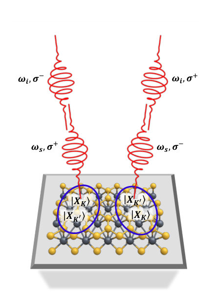
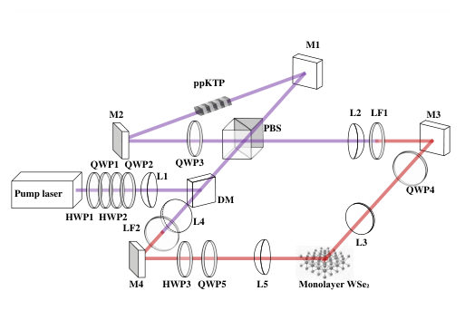
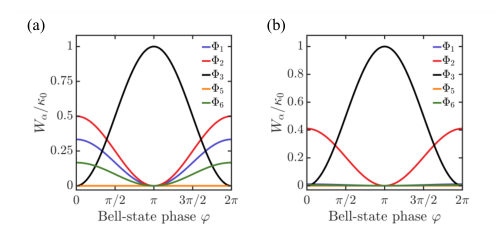
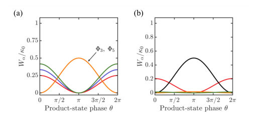
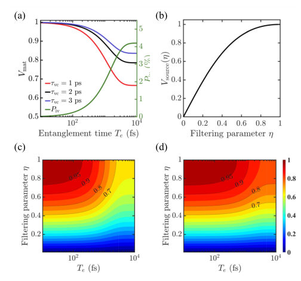
Summary. This paper shows that the phase of entangled photon pairs can selectively control which biexciton states are created in monolayer WSe2. By tuning the Bell-state phase, one can switch between exciting bright and dark states, a phenomenon with no classical counterpart. This provides a powerful tool for quantum-enhanced spectroscopy and studying valley dynamics.
Why it may be interesting. It provides a unique intersection of quantum optics and condensed matter, demonstrating how the control of Bell-state phases can manipulate many-body excitonic states and offering a method to probe valley decoherence using entangled light.
Main problem. The paper investigates whether the Bell-state phase of polarization-entangled photon pairs can be used to achieve eigenstate-selective two-photon absorption in monolayer WSe2, specifically distinguishing quantum entanglement signatures from classical light.
Main result. The researchers demonstrate that the Bell-state phase acts as a quantum switch, where the symmetric state (phi=0) drives bright biexciton eigenstates and the antisymmetric state (phi=pi) suppresses bright states to selectively populate the exchange-dark eigenstate.
Method. The study combines a theoretical framework using Dyson-series expansion and time-domain integration with an experimental setup using a Sagnac interferometer and type-II SPDC to generate entangled photon pairs.
Model / system. The physical system is a monolayer of WSe2 characterized by valley degrees of freedom (K and K' points). The model involves a frequency-nondegenerate ladder scheme for entangled two-photon absorption into a biexciton manifold with exchange-split fine structure.
Key observables. Biexciton pumping rates (W_alpha), Bell-state phase-scan visibility, and the transition amplitudes for bright vs. dark eigenstates.
Important parameters / regimes. Bell-state phase (phi), biexciton binding energies (3.1 to 19.8 meV), exciton dephasing rate (1.5 meV), and the broadband SPDC correlation window (T_e ~ 100 fs).
Assumptions / limitations. The study assumes a Markovian bath for environmental interactions, valley symmetry (identical dipole matrix elements and dephasing in K and K' valleys), and the dominant-contraction approximation where energy separation exceeds the dephasing rate.
Figures summary. Figure 2 shows the experimental setup with the Sagnac interferometer; Figure 3(a) illustrates the pumping rate distribution across eigenstates as a function of the Bell-state phase.
Paper structure. The paper introduces the ETPA controversy, describes the experimental and theoretical framework for phase-dependent absorption, presents the derivation of selection rules for bright and dark states, quantifies the impact of decoherence and intervalley scattering, and concludes with the robustness of the entanglement signature.
We show that the Bell-state phase of a polarization-entangled photon pair controls the biexciton eigenstate distribution produced by entangled two-photon absorption (ETPA) in monolayer WSe$_2$. In a frequency-nondegenerate ladder scheme, two independent valley pathways ($K$ and $K'$) share no intermediate state, so the biphoton phase sets the relative amplitude between them. Within the valley-symmetric limit this phase factorizes from the material response, and the resulting selection rule partitions the excitation among biexciton eigenstates according to the Bell-state phase $\varphi$. The symmetric Bell state ($\varphi = 0$) selectively drives bright eigenstates, while the antisymmetric state ($\varphi = π$) drives the exchange-dark eigenstate. No classical polarization source reproduces this $\varphi$-dependent eigenstate distribution. Including valley dephasing and intervalley scattering at 4~K, the phase-scan visibility exceeds $0.97$ for broadband SPDC ($T_e \sim 100$~fs) with high source purity.
Authors: Fei Liu, Jiayi Gu, Hailong Wang, Shanhe Su
Type: theory · Category: statistical mechanics · PDF: https://arxiv.org/pdf/2605.06244v1
Analysis basis: full PDF text, analyzed in chunks
Topic relevance: 🔥 methods for driven-dissipative 4/5 · driven-dissipative phase transition 3/5 · non-equilibrium dynamics 3/5 · non-equilibrium universality 3/5 · quantum measurements 2/5
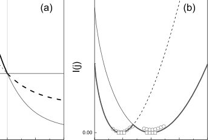
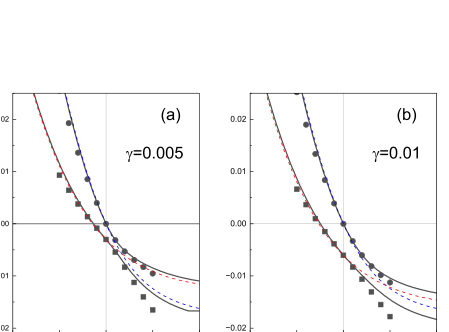
Summary. The paper addresses the failure of the Gärtner-Ellis theorem in open quantum systems with strong symmetries. By proposing a method to reconstruct the global rate function from local block-wise rate functions, the authors successfully describe the non-convexity and nonanalyticity caused by symmetry. They further show how dephasing resolves these nonanalyticities through an avoided level-crossing mechanism.
Why it may be interesting. This is highly relevant for researchers in open quantum systems and non-equilibrium statistical mechanics, as it provides a rigorous way to handle fluctuations in systems where symmetries prevent the use of standard thermodynamic limit theorems.
Main problem. Determining the genuine large-deviation rate function in open quantum systems with strong symmetries, where the global scaled cumulant generating function (SCGF) is nonanalytic and the standard Gärtner-Ellis theorem fails.
Main result. The authors propose a block-wise application of the Gärtner-Ellis theorem, where the global rate function is recovered by minimizing local rate functions from individual symmetry blocks. They demonstrate that symmetry-breaking dephasing transforms the nonanalytic level crossing in the SCGF into an avoided crossing.
Method. The approach uses the Legendre transform of local SCGFs, degenerate perturbation theory to quantify symmetry-breaking effects, and quantum jump trajectory simulations for verification.
Model / system. The study focuses on open quantum systems governed by a Markovian Lindblad master equation with a strong symmetry operator that commutes with the Hamiltonian and jump operators. Specific models include an analytical model with collective spin-like operators and a three-spin model with XX interaction and local dephasing.
Key observables. Scaled cumulant generating function (SCGF), large-deviation rate function, total activity (counting variable), and Liouvillian gap.
Important parameters / regimes. Dephasing strength (gamma), jump rates (r plus/minus), magnetic field (Bz), and counting field (lambda).
Assumptions / limitations. The large-deviation principle is assumed to hold within each symmetry block, and the analysis excludes cases with nonzero coherent oscillators between subspaces.
Paper structure. The paper introduces the problem of nonanalyticity in symmetric systems, proposes a block-wise minimization scheme justified by dissipative freezing, demonstrates the method using an analytical model, applies it to a three-spin XX model to study dephasing-induced avoided crossings, and concludes with limitations and future directions.
In open quantum systems with strong symmetries, the global scaled cumulant generating function (SCGF) is generally nonanalytic, so the Gärtner-Ellis theorem cannot directly yield the genuine large-deviation rate function. To address this issue, we propose that the theorem remains valid within blocks of the systems' operator space: we first obtain local rate functions for each block via the theorem and then recover the global one by minimization. This approach is justified by the dissipative freezing phenomenon in such systems. We demonstrate the scheme in an analytical model and a three-spin model with XX interaction. In the latter, we find that the vanishing of a nonanalytic point in the global SCGF under dephasing appears as an avoided ``level'' crossing, and we quantify this behavior using a degenerate perturbation theory.
Authors: Paolo Luppi, Claudia Benedetti, Andrea Smirne
Type: theory · Category: quantum information and computing · PDF: https://arxiv.org/pdf/2605.06427v1
Analysis basis: full PDF text, analyzed in chunks
Topic relevance: 🔥 quantum measurements 4/5 · methods for driven-dissipative 3/5 · Keldysh / 2PI / non-Gaussian methods 2/5 · Kondo & dissipative impurity 2/5 · entanglement & information structure 2/5 · non-equilibrium dynamics 2/5
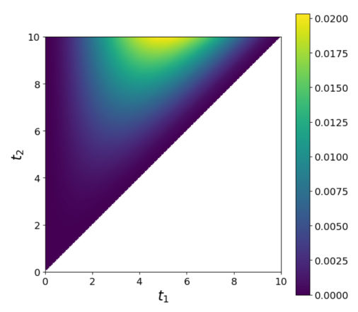
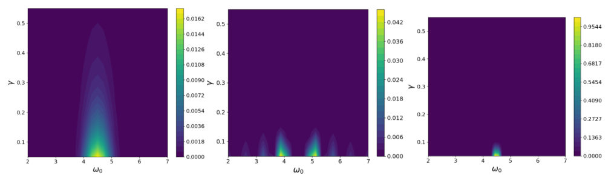
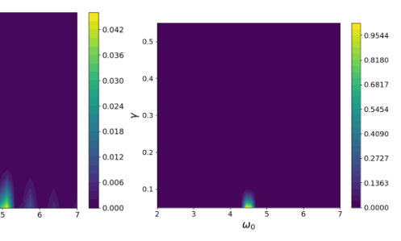
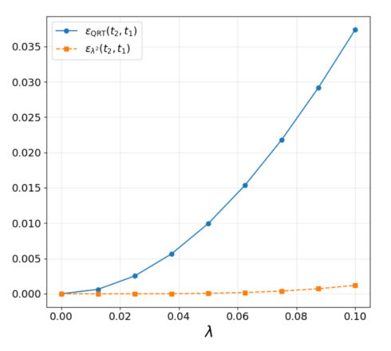
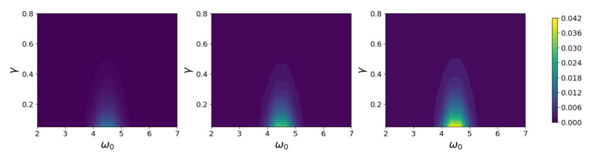
Summary. This paper investigates how the Quantum Regression Theorem fails in sequential measurements due to system-environment correlations. It introduces a way to quantify this 'multitime memory' and shows that higher-order measurement protocols can reveal non-Markovian effects that are invisible in simpler two-time statistics.
Why it may be interesting. It provides a new framework for understanding how system-environment correlations are revealed through sequential measurements, which is crucial for interpreting experimental data in open quantum systems and quantum optics.
Main problem. Investigating the breakdown of the Quantum Regression Theorem (QRT) in sequential measurement statistics and distinguishing between one-time non-Markovianity and multitime memory.
Main result. The authors show that multitime memory is protocol-dependent and can manifest at higher temporal orders even when two-time statistics obey the QRT; they also derive a second-order correction for the weak-coupling regime.
Method. The study uses projection-operator techniques to decompose the two-time propagator, a perturbative expansion for weak coupling, and pseudomode embedding for non-perturbative benchmarking.
Model / system. An open quantum system (specifically a spin-boson model/qubit) coupled to a Gaussian bosonic bath with a Lorentzian spectral density.
Key observables. Two-time and three-time joint probabilities, two-time correlators, and an operational quantifier of QRT violation based on Kolmogorov distance.
Important parameters / regimes. Coupling strength (lambda), spectral density parameters (center eta and width gamma), environmental temperature (beta), and measurement protocols (commuting vs. non-commuting).
Assumptions / limitations. The system starts in a factorized initial state with a Gaussian bath, and the derived correction is specifically valid in the weak-coupling regime.
Figures summary. Figures compare one-time vs. two-time non-Markovianity, show the reduction of error using the second-order correction, illustrate temperature dependence, and demonstrate how higher-order (three-time) protocols reveal more memory than two-time protocols.
Paper structure. The paper moves from the theoretical derivation of the propagator decomposition and the weak-coupling correction to numerical benchmarking using the spin-boson model, followed by a comprehensive analysis of the impact of temperature, spectral density, and measurement protocols.
We investigate the presence of memory in the sequential measurement statistics of an open quantum system, as witnessed by the departure from the quantum regression theorem (QRT), that is, the possibility to predict multitime probabilities from the one-time reduced dynamical map. For factorized initial states, we identify an exact decomposition of the two-time propagator into a QRT-like contribution, fully determined by the reduced dynamical map, and a memory term encoding system--environment correlations across the intervention; in the weak-coupling regime, the memory term yields an explicit second-order correction expressed in terms of the reduced map and bath correlation functions. Furthermore, we introduce an operational quantifier of QRT violations based on the distance between exact and QRT-predicted joint probabilities. Benchmarking the framework on a spin--boson model and using a pseudomode embedding as nonperturbative reference, we comprehensively analyze the impact of spectral-density parameters, environmental temperature, and measurement protocols on the non-Markovianity of the multitime statistics. Comparison with a one-time quantifier shows that reduced-state non-Markovianity and multitime memory are related but inequivalent: the latter, as probed through sequential statistics, is intrinsically protocol dependent and can become visible at higher temporal order even when two-time statistics remain compatible with QRT predictions.
Authors: Songtao Huang, Xingyu Li, Jianyi Chen, Alan Tsidilkovski, Gabriel G. T. Assumpção, Pengfei Zhang, Hui Zhai, Nir Navon
Type: both · Category: quantum gases · PDF: https://arxiv.org/pdf/2605.06666v1
Analysis basis: full PDF text, analyzed in chunks
Topic relevance: 🔥 Kondo & dissipative impurity 4/5 · 🔥 non-equilibrium dynamics 4/5 · analog quantum simulation 3/5 · non-equilibrium universality 2/5 · scars & prethermalization 2/5
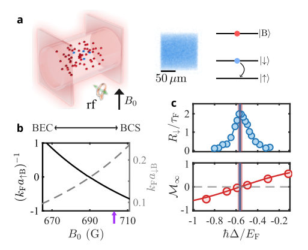
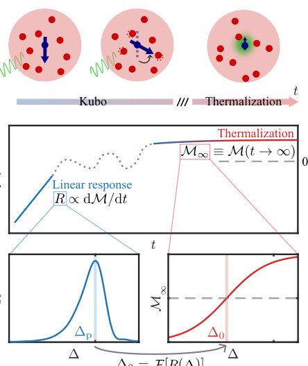
Summary. The paper establishes the Kubo-Thermalization correspondence, which exactly relates short-time linear-response spectra to long-time steady-state magnetization. This link is experimentally verified using ultracold 6Li atoms in the BCS-BEC crossover. The result provides a powerful tool to study thermalization in strongly interacting quantum systems using equilibrium measurements.
Why it may be interesting. It provides a universal, exact link between equilibrium response and thermalization dynamics, offering a new way to infer complex many-body thermalization from simple spectroscopic measurements.
Main problem. Bridging the gap between short-time linear-response spectroscopy and long-time quantum thermalization in many-body systems.
Main result. Establishment of the Kubo-Thermalization correspondence, an exact functional link between the long-time steady-state magnetization and the short-time linear-response spectrum.
Method. Theoretical derivation using analytic continuation and detailed balance, complemented by experimental verification using RF spectroscopy and magnetization measurements in ultracold Fermi gases.
Model / system. A spin-1/2 impurity (encoded in two internal states of 6Li) coupled to a thermal bath of atoms in a third state, realized in a uniform optical box trap.
Key observables. Asymptotic magnetization (M_infinity), transition rate spectrum (R_down), spectral width (Gamma), and effective resonance frequency (Delta_0).
Important parameters / regimes. Inverse temperature (beta), s-wave scattering length (a_up_B), spin fraction (x), and spectral width (Gamma).
Assumptions / limitations. The spin-bath interaction does not induce spin flips; the system is in a weakly driven regime; the spin-spin interactions are negligible due to high imbalance.
Figures summary. Illustrates the transition from narrow to broad spectra and the scaling of the deviation between spectral peak and magnetization zero-crossing as a function of interaction strength.
Paper structure. The paper introduces the problem of disconnected dynamics, derives the Kubo-Thermalization correspondence theoretically, presents the experimental implementation using 6Li atoms, and demonstrates the correspondence across the BCS-BEC crossover.
Quantum thermalization describes how interacting quantum systems relax toward thermal equilibrium, a central problem in modern physics. Yet most experimental information on many-body systems comes from short-time transition spectroscopy, typically interpreted within Kubo's linear-response framework. These perspectives - long-time equilibration versus short-time response - seem fundamentally disconnected. Here we establish an exact link between them: the Kubo-Thermalization correspondence, which connects long-time thermalized magnetization under weak driving to short-time linear-response spectra for a spin coupled to a thermal bath. The correspondence holds even when the steady state differs substantially from the initial state and when each regime is individually difficult to describe theoretically. We experimentally confirm the correspondence using effective spin-1/2 impurities realized with ultracold fermions in two internal states coupled to a Fermi sea. Our results provide a rare exact statement about quantum thermalization and offer a novel route to infer thermalization dynamics from equilibrium response measurements in strongly interacting quantum systems, independent of microscopic details of the system-bath coupling.
Authors: Felipe Reyes-Osorio, Branislav K. Nikolic
Type: theory · Category: other · PDF: https://arxiv.org/pdf/2605.06473v1
Analysis basis: full PDF text, analyzed in chunks
Topic relevance: 🔥 Keldysh / 2PI / non-Gaussian methods 4/5 · 🔥 correlated / nonlocal dissipation 4/5 · methods for driven-dissipative 2/5 · non-equilibrium dynamics 2/5 · spintronics-quantum-optics interface 2/5
Summary. This paper proposes a method to engineer complex, controllable damping in magnetic layers by coupling them to a driven-dissipative bath of altermagnetic magnons. It shows that this coupling introduces non-local and non-Markovian effects that can be used to tune the motion of domain walls and the stability of skyrmions. This provides a new theoretical toolkit for active control in spintronic and magnonic devices.
Why it may be interesting. not directly relevant
Main problem. The challenge of controlling and engineering magnetization damping in spintronics and magnonics by using a driven-dissipative bath of quantum magnons.
Main result. The authors derive an extended Landau-Lifshitz-Gilbert equation containing spatially nonlocal, anisotropic, and non-Markovian damping terms induced by an altermagnetic insulator layer.
Method. Schwinger-Keldysh field theory (SKFT) is used to integrate out the quantum magnon bath, combined with Holstein-Primakoff and Bogoliulyov transformations.
Model / system. An AMI/FI bilayer consisting of an altermagnetic insulator (AMI) layer hosting quantum magnons and a ferromagnetic insulator (FI) layer with classical localized spins, coupled via interlayer exchange $J_I$.
Key observables. Spin wave spectrum (frequency and damping), domain wall velocity, skyrmion stability/annihilation, and the spatial dependence of the nonlocal torque.
Important parameters / regimes. Altermagnetic strength ($\delta$), interlayer coupling ($J_I$), driving frequency ($\Omega_c$), temperature ($T$), and intrinsic Gilbert damping ($\alpha_G$).
Assumptions / limitations. Small interlayer coupling (second-order expansion in $J_I$), long-wavelength approximation for AMI magnon dispersion, and neglect of fluctuations quadratic in quantum fields.
Figures summary. Fig 1 shows the bilayer schematic and lattice structure; Fig 2 displays the spin wave spectrum and non-Markovian damping; Fig 3 illustrates the spatial dependence and anisotropy of the nonlocal torque.
Paper structure. The paper introduces the problem of damping control, defines the AMI/FI bilayer model, applies SKFT to derive the effective action and extended LLG equation, and then demonstrates the physical consequences for spin waves, domain walls, and skyrmions.
Using Schwinger-Keldysh field theory (SKFT), we engineer a dissipative and driven (i.e., out of equilibrium) bosonic bath acting on classical localized spins within a ferromagnetic insulator (FI) layer whose dynamics is governed by the Landau-Lifshitz-Gilbert equation, as is usually assumed in spintronics and magnonics. The bosonic bath is comprised of quantum magnons within a layer of altermagnetic insulator (AMI) that is attached to a conventional FI layer, often one of the key ingredients within spintronic and magnonic multilayers, so that interaction between slow classical (in the FI layer) and fast quantum (in the AMI layer) localized spins ensues. Such a bath, including its driving to produce a nonequilibrium distribution of altermagnetic magnons, generates a rich structure of the SKFT-derived extended LLG equation for classical spins within the FI layer. Our LLG equation contains two damping terms, both of which are spatially nonlocal and anisotropic, while one of them is also intrinsically non-Markovian, i.e., nonlocal in time. We demonstrate how to exploit these terms for tuning spintronic and magnonic effects within the FI layer of AMI/FI bilayers that involve spin wave or domain wall propagation, as well as skyrmion annihilation.
Authors: Biswajit Paul, Nilanjan Roy, Tapan Mishra
Type: theory · Category: disordered systems and neural networks · PDF: https://arxiv.org/pdf/2605.06089v1
Analysis basis: full PDF text, analyzed in chunks
Topic relevance: 🔥 entanglement & information structure 4/5 · 🔥 non-equilibrium dynamics 4/5 · non-equilibrium universality 3/5 · scars & prethermalization 3/5
Summary. This paper shows that periodic driving in a quasiperiodic Ising chain can suppress many-body localization to create a stable, non-ergodic extended phase called the Many-Body Critical phase. It identifies how driving frequency controls the transition between ergodic, MBL, and MBC regimes. This discovery offers a new way to engineer non-ergodic dynamics in driven quantum systems.
Why it may be interesting. It provides a counter-intuitive mechanism where periodic driving, which usually drives systems toward ergodicity, can be used to stabilize a specific type of non-ergodic extended phase (MBC), offering new routes for controlling transport and information in driven many-body systems.
Main problem. Investigating the stability of many-body localization (MBL) under periodic driving and exploring whether a non-ergodic extended phase, known as the Many-Body Critical (MBC) phase, can be stabilized or expanded.
Main result. The study demonstrates that Floquet driving can suppress the MBL phase and instead promote a robust, broad Many-Body Critical (MBC) phase, particularly at moderate driving frequencies.
Method. Numerical exact diagonalization on finite system sizes, use of the Magnus expansion to analyze driving regimes, and scaling analysis of level statistics and entanglement growth.
Model / system. A one-dimensional, periodically driven (kitted) quasiperiodic Ising spin-1/2 chain with alternating transverse and longitudinal fields.
Key observables. Level spacing ratio (LSR), Inverse Participation Ratio (IPR), autocorrelation function, and half-system entanglement entropy.
Important parameters / regimes. Driving period (T), quasiperiodicity strengths (delta and lambda), transverse field (mu), and interaction strength (J).
Assumptions / limitations. The use of the Magnus expansion assumes high-frequency driving can be related to a time-averaged static Hamiltonian; finite system size limitations (L=9 to 12).
Figures summary. The figures illustrate phase diagrams showing the coexistence or suppression of Ergodic, MBL, and MBC phases, and plots of level spacing ratios and entanglement entropy growth across different driving frequencies.
Paper structure. The paper introduces the problem of Floquet-induced thermalization, describes the quasiperiodic Ising model, details the numerical and analytical methods (Magnus expansion, scaling), presents the results for high and moderate frequency regimes, and discusses the physical implications and potential applications.
Many-body localized (MBL) systems are known to thermalize in periodically driven systems. In this work, we demonstrate that under proper driving protocol, this thermalization this thermalization can be resisted such that the MBL phase turns into a non-ergodic extended phase, known as the many-body critical (MBC) phase. Considering a kicked quasiperiodic Ising chain, we show that while at high-frequency driving the ergodic, MBL, and the MBC phases coexist, at moderate driving frequencies the MBL phase is completely suppressed and the MBC phase proliferates in the parameter space. Using quasienergy statistics, Floquet eigenstates, autocorrelation dynamics, and entanglement growth, we characterize the emergent phases and identify non-monotonic signatures revealing richness of the nonergodic phases. Our results establish Floquet driving as a powerful route to stabilizing nonergodic extended many-body phases beyond the conventional Floquet-MBL paradigm.
Authors: Prajit Dhara, Isack Padilla, Saikat Guha, Annyun Das, Kanu Sinha
Type: theory · Category: other · PDF: https://arxiv.org/pdf/2605.05434v1
Analysis basis: full PDF text, analyzed in chunks
Topic relevance: 🔥 correlated / nonlocal dissipation 4/5 · free-space correlated emission 3/5 · quantum measurements 3/5 · interference shaping light 2/5 · non-equilibrium dynamics 2/5
Summary. This paper shows that the time-delayed feedback inherent in widely separated waveguide-coupled atoms can be used to improve the precision of field gradient sensing. By forming long-lived quasi-bound states, the system allows for extended interaction times, leading to a massive enhancement in Quantum Fisher Information compared to non-interacting atoms.
Why it may be interesting. It provides a novel perspective on using retardation and non-Markovianity—often seen as detrimental—as a functional resource for distributed quantum metrology in waveguide QED.
Main problem. Investigating whether non-Markovian memory effects and time-delayed feedback in waveguide-coupled quantum emitters can be leveraged as a resource to enhance the sensitivity of sensing field gradients.
Main result. The study demonstrates that non-Markovian delay and the formation of atom-photon quasi-bound states (qBICs) significantly enhance the Quantum Fisher Information for estimating relative detuning, outperforming independent emitters by several orders of magnitude.
Method. The authors use Laplace transforms, the Lambert-W function, and Cauchy's residue theorem to solve delay-differential equations for atomic amplitudes, alongside Quantum Fisher Information (QFI) analysis and loss-rate minimization.
Model / system. A system of two two-level quantum emitters coupled to a one-dimensional waveguide with a large interatomic separation, where an external field gradient induces frequency detuning between the emitters.
Key observables. Quantum Fisher Information (QFI) for detuning, atomic excitation probabilities, field spectrum, and the interatomic loss rate.
Important parameters / regimes. Dimensionless interatomic separation (eta), relative detuning (delta), atomic decay rate (gamma), and the presence of quasi-bound states in the continuum (qBICs).
Assumptions / limitations. Perfect emitter-waveguide coupling (beta = 1), linear dispersion in the waveguide, flat spectral density, and operation within the single-excitation manifold.
Figures summary. Figure 1 shows the physical setup and field gradient; Figure 2 plots excitation probabilities and revivals; Figure 3 displays the field spectrum; Figure 4 illustrates QFI enhancement and its alignment with qBIC conditions; Figure 6 shows atomic frequency response functions.
Paper structure. The paper introduces the sensing problem and physical setup, develops the mathematical framework for non-Markovian dynamics using series and multi-exponential approaches, analyzes the field spectrum and quasi-bound states, evaluates the QFI for parameter estimation, and benchmarks the performance against independent emitters.
We show that in a minimal setup of two waveguide-coupled quantum emitters, separated by long distances and subject to an external field, time-delayed feedback can be a resource for sensing field gradients. While the field gradient induces a detuning between the emitters; the large interatomic separations render the system dynamics non-Markovian. We show that the quantum Fisher information (QFI) for estimating the detuning parameter, and thereby the field gradient, is enhanced in the presence of non-Markovian delay. Such an enhancement can be attributed to the formation of atom-photon quasi-bound states that enable the field to interact with the emitters for longer times, thereby gaining more information about their relative detunings. Additionally, in the presence of delay, the interaction between the emitters is mediated via multiple spectral modes of the field, further enhancing the sensing capabilities of the system. Our results establish non-Markovian time-delayed feedback and multimode reservoirs as a resource for distributed quantum sensing with waveguide-coupled quantum emitters.
Authors: Haoran Ma, Huihui Zhu, Zichao Zhao, Qishen Liang, Liao Ye, Baojie Hou, Jia Guo, Leong Chuan Kwek, Mile Gu, Jayne Thompson, Wei Luo, Yuehai Wang, Jianyi Yang
Type: both · Category: quantum information and computing · PDF: https://arxiv.org/pdf/2605.06397v1
Analysis basis: full PDF text, analyzed in chunks
Topic relevance: 🔥 QC/QI experiment 4/5 · 🔥 quantum optics experiment 4/5 · quantum measurements 3/5 · interference shaping light 2/5
Summary. The paper presents a new way to build deep quantum neural networks on photonic chips by expanding the computational space through 'virtual' dimensions. This method allows for complex nonlinear tasks like image generation and state preparation without needing extra physical qubits or complex feedback loops, making quantum machine learning more scalable.
Why it may be interesting. This work is highly relevant to quantum optics and open quantum systems as it demonstrates a method to engineer non-unitary dynamics and effective non-linearities using only linear optical elements and controlled measurement-induced projections.
Main problem. Implementing efficient non-unitary and nonlinear activation functions in deep quantum neural networks (QNNs) on linear photonic platforms without the high resource costs of ancillary qubits and real-time feedback.
Main result. The development of an ADE-QNN architecture that achieves nonlinearity via virtual-driven Hilbert space expansion, demonstrating high-accuracy nonlinear classification, image generation (QGAN), and quantum Gibbs state preparation (QGDM).
Method. The researchers use input replication and mode expansion (MCRY module) to expand the Hilbert space, followed by partial measurements to induce non-unitary behavior, optimized via a hybrid quantum-classical loop using SPSA.
Model / system. An integrated silicon-photonic chip featuring four high-quality entanglement sources and a programmable high-dimensional interferometric network, utilizing a 4-qubit register (2 photons) and path degrees of freedom.
Key observables. Photon indistinguishability (HOM visibility), gate fidelity (CCCX), classification accuracy, SSIM for image generation, and fidelity for Gibbs state preparation.
Important parameters / regimes. Photon wavelength (1550.92 nm), photon indistinguishability (0.928), CCCX gate fidelity (0.924), and the expansion factor of the Hilbert space (4x).
Assumptions / limitations. The approach assumes that the expansion of the Hilbert space via path degrees of freedom is mathematically equivalent to adding virtual qubits and that post-selection on these modes is experimentally feasible.
Figures summary. Figure 1 shows the ADE-QNN framework and circuit; Figure 2 details hardware characterization (sources and gates); Figure 3 displays classification performance and decision boundaries; Figure 4 and 5 illustrate QGAN and QGDM implementations.
Paper structure. The paper introduces the challenge of nonlinearity in photonic QNNs, proposes the ADE-QNN architecture based on Hilbert space expansion, details the experimental silicon-photonic platform, demonstrates performance on classification and generative tasks, and concludes with a comparative analysis of resource efficiency.
The growing computational demands of classical neural networks have intensified the search for energy-efficient and powerful computational alternatives. Quantum neural networks (QNNs) implemented on integrated photonic platforms offer a compelling avenue, offering exceptional computational power enhancements, with inherent programmability and scalability of integrated architectures. A critical challenge, however, is implementing the fundamental non-unitary and nonlinear activation function of QNNs within a linear quantum photonic system. Existing strategies, such as the adding ancillary qubits and measurement-based feedback or forward are constrained by high qubit resource costs, overhead devices, and poor cascadability. Here, we propose a novel deep photonic QNN with an expanded computational Hilbert space via input replication and mode expansion, which enables the realization of effective non-unitary and nonlinear activation on a linear programmable quantum photonic chip. This approach eliminates the need for physical ancillary qubits, measurement-induced qubit consumption and the measurement device burden, thereby significantly reduce resource costs. The fabricated chip integrates four high-quality entanglement sources and a programmable high-dimensional interferometric network, enabling a two-hidden-layer QNN that exhibits dimension-enhanced expressivity over the existing QNN architectures. We demonstrate its capabilities across diverse tasks, including nonlinear classification, image generation, and quantum Gibbs state preparation. This work establishes a scalable and efficient architecture toward practical quantum deep learning systems capable of tackling problems beyond the reach of classical computation.
Authors: Carlo Vanoni, David M. Long, Anushya Chandran
Type: theory · Category: disordered systems and neural networks · PDF: https://arxiv.org/pdf/2605.05445v1
Analysis basis: full PDF text, analyzed in chunks
Topic relevance: 🔥 non-equilibrium dynamics 4/5 · entanglement & information structure 3/5 · non-equilibrium universality 3/5 · scars & prethermalization 3/5
Summary. The paper proposes that the observed numerical drifts in Many-Body Localization are driven by the proliferation of many-body resonances. By developing a statistical method based on the Jacobi algorithm, the authors derive flow equations that describe how resonances accumulate to trigger a transition to thermalization, matching numerical results across several disordered models.
Why it may be interesting. This paper provides a theoretical framework for understanding the stability of localized phases and the mechanism of thermalization through resonance proliferation, which is central to many-body dynamics and the study of prethermal regimes.
Main problem. Understanding the physical mechanism behind the slow numerical drifts toward delocalization in Many-Body Localization (MBL) models and explaining how resonance proliferation drives these transitions.
Main result. The authors derive a flow equation for a scale-dependent resonance exponent theta(w) that predicts the onset of thermalization via resonance proliferation, identifying the transition as belonging to the BKT universality class.
Method. The Statistical Jacobi Approximation (SJA) is used to track the evolution of Hamiltonian matrix elements during an iterative Jacobi diagonalization process, leading to the derivation of functional flow equations.
Model / system. The study covers several models including the Anderson model on random regular graphs, the Levy-Rosenzweig-Porter random matrix ensemble, and real-space MBL models like the disordered Heisenberg spin chain.
Key observables. Resonance exponent theta(w), participation ratio (PR), return probability, and the density of resonances.
Important parameters / regimes. Frequency scale (w), disorder strength (W), resonance exponent (theta), and the critical scale (wc).
Assumptions / limitations. The SJA assumes a power-law ansatz for the distribution of matrix elements and neglects correlations that build up during the decimation process.
Figures summary. Figures illustrate the Jacobi algorithm procedure, the evolution of the resonance exponent theta(w) across different models, and the connection between resonance density and eigenstate participation ratios.
Paper structure. The paper introduces the problem of MBL drifts, develops the SJA framework and flow equations, applies the theory to various random matrix and graph models, and finally connects the results to real-space MBL dynamics and observables.
Models of many-body localization (MBL) exhibit slow numerical drifts towards delocalization with increasing system size, for which no satisfactory theory exists. Numerics indicates that these drifts are driven by the proliferation of many-body resonances at intermediate disorder strengths. We develop a statistical method to predict the distribution of resonance oscillation frequencies which captures how the formation of resonances at larger frequency scales subsequently affects the formation of resonances at lower frequencies. Working within the statistical Jacobi approximation (SJA), we derive a flow equation for a power-law exponent $θ(w)$ characterizing the density of resonances at frequency scale $w$. A localized phase is described by a line of fixed points with $θ(w)>0$, while an instability of the flow signals resonance proliferation and the onset of thermalization. The predicted $θ(w)$ matches numerics on the Anderson model on random regular graphs and the Lévy-Rosenzweig-Porter random matrix ensemble, both of which host resonance-driven delocalization transitions. We further connect the flow to eigenstate properties such as the participation ratio and to dynamical observables such as the return probability. The predicted $θ(w)$ also matches what is numerically measured in real-space models of MBL at intermediate disorder strengths, representing a significant step towards explaining the finite-size drifts observed in MBL.
Authors: Joshua M. Courtney, P. C. Stancil
Type: both · Category: quantum information and computing · PDF: https://arxiv.org/pdf/2605.06122v1
Analysis basis: full PDF text, analyzed in chunks
Topic relevance: 🔥 QC/QI experiment 4/5 · non-equilibrium dynamics 3/5 · Keldysh / 2PI / non-Gaussian methods 2/5 · entanglement & information structure 2/5 · methods for driven-dissipative 2/5
Summary. This paper presents a method to compress quantum circuits used for simulating nonadiabatic molecular dynamics by truncating long-range interactions in a Walsh expansion. By using a variational approach, the authors show that they can significantly reduce gate counts and depth while preserving essential physical observables like reaction rates. The method was successfully validated through both classical emulation and experiments on IBM quantum processors.
Why it may be interesting. It provides a scalable strategy for simulating complex time-dependent dynamics by trading off precision for circuit shallowing, which is directly applicable to simulating many-body dynamics and open quantum systems on near-term hardware.
Main problem. The high circuit depth and gate overhead required to simulate nonadiabatic molecular dynamics on NISQ and early fault-tolerant quantum hardware.
Main result. Demonstrated that variational compression of Trotter terms using l-local truncation preserves reaction rate coefficients and allows for 'fast-forwarding' dynamics with reduced gate counts and depth.
Method. Variational compression using a Walsh function expansion and a Variational Fast-Forwarding (VFF) ansatz, optimized via Quantum-Assisted Quantum Compiling (QAQC) with the Local Hilbert-Schmidt Test.
Model / system. The Marcus model for nonadiabatic electron transfer, involving a particle in two coupled harmonic potentials and a position-dependent coupling function, implemented on IBM Brisbane, Torino, and Sherbrooke quantum processors.
Key observables. Reaction rate coefficients, electronic state populations, entanglement fidelity, and state fidelity.
Important parameters / regimes. Number of qubits (n), locality parameter (l), driving force (delta G), reorganization energy (lambda), and temperature (T).
Assumptions / limitations. The approximation assumes that quadratic operators can be effectively represented by truncated Walsh series and that hardware gate errors can be matched to logical approximation errors.
Figures summary. Comparison of explicit vs. compressed circuit decompositions; plots of QAQC optimization convergence; hardware validation showing state fidelity vs. timesteps; and comparison of extracted Marcus model rate coefficients against theoretical values.
Paper structure. The paper introduces the problem of circuit depth in molecular dynamics, presents the variational compression and VFF methodology, details the QAQC optimization protocol, provides classical emulation results, and concludes with experimental validation on IBM quantum hardware.
Quantum simulation has begun to penetrate the field of quantum chemistry in hopes of efficiently calculating ground state energies and approximating real-time evolution. With modern research highlighting nonadiabatic dynamics, tunably approximating deep circuits representing potential landscapes becomes crucial for simulating real quantum systems. Variationally approximating unitaries allows for shallower circuits and accuracy tunable to hardware fidelity, so long as the observable quantities are preserved. We show the variational compression of Trotter terms preserve reaction rate coefficients via classical emulation of a hybrid quantum-classical optimization method, as well as fast-forwarded adiabatic dynamics on quantum hardware. Compressed circuits can be incorporated with product-formula-based time evolution to approximate dynamics of a particle in two coupled harmonic potentials, allowing tunability when removing high-cost qubit interactions. Approximate rate coefficients are recovered after substituting terms in a nonadiabatic dynamic process, giving proof-of-principle for observable preservation under variational optimization. Attention is paid to minimizing qubit and gate-count resources.
Authors: Jason Laurie, Simon Thalabard, Sergey Nazarenko
Type: theory · Category: statistical mechanics · PDF: https://arxiv.org/pdf/2605.06396v1
Analysis basis: full PDF text, analyzed in chunks
Topic relevance: 🔥 non-equilibrium dynamics 4/5 · 🔥 non-equilibrium universality 4/5 · Keldysh / 2PI / non-Gaussian methods 2/5 · scars & prethermalization 2/5

Summary. The paper explores how the 2D nonlinear Schrödinger model undergoes a cooling process toward a zero-temperature equilibrium. It demonstrates that this evolution is driven by self-similar spectral fronts and follows specific algebraic scaling laws. The study also highlights the role of non-local interactions in preventing sharp spectral boundaries.
Why it may be interesting. This paper is highly relevant for many-body dynamics and non-equilibrium statistical mechanics, as it provides a rigorous description of how wave turbulence relaxes toward equilibrium and the emergence of universal scaling laws in classical wave systems.
Main problem. Investigating the temporal evolution of the wave action spectrum towards partial thermalization and the subsequent 'dynamical cooling' process in the 2D nonlinear Schrödinger model.
Main result. The study identifies an algebraic cooling law where temperature scales as T(t) proportional to t^(-1/3) and characterizes the self-similar propagation of spectral fronts, distinguishing between first-kind and third-kind self-similarity.
Method. The authors use direct numerical simulations of the NLS equation, analysis of the Wave-Kinetic Equation (WKE), and a fourth-order Differential Approximation Model (DAM) combined with self-similar ansatz and asymptotic analysis.
Model / system. The 2D defocusing nonlinear Schrödinger (NLS) model, which describes physical systems like nonlinear optics (Kerr media), water-wave theory, and Bose-Einstein condensates.
Key observables. Wave action density (N_omega), energy density (E_omega), wave action flux (Q), energy flux (P), temperature (T), and chemical potential (mu).
Important parameters / regimes. Frequency (omega), temperature (T), chemical potential (mu), and the spectral exponent (x) determining collision integral convergence.
Assumptions / limitations. Assumptions include the 'super-local' interaction hypothesis in the DAM, the infinite box limit in the WKE, and the use of a power-law spectrum ansatz for convergence analysis.
Figures summary. Figure 1 shows spectral evolution toward Rayleigh-Jeans profiles; Figure 2 tracks dynamics of chemical potentials and temperature; Figure 8 and 9 demonstrate numerical evidence for self-similar wave propagation and convergence of weighted profiles.
Paper structure. The paper begins by defining the problem of dynamical cooling and the NLS model, moves to numerical and analytical methods (WKE and DAM), presents results on spectral fronts and scaling laws, provides a detailed convergence analysis of the collision integral, and concludes with a discussion on high-frequency nonlocality.
We analyze the dynamics towards partial thermalization and subsequent cooling in the defocusing two-dimensional nonlinear Schrödinger model, using direct simulations and insights from the wave-kinetic equations (WKE) and a fourth-order differential approximation model (DAM). We show that the evolving WKE spectrum exhibits two distinct similarity ranges--the quasi-thermal core and the ultraviolet tail--whereas in the DAM, an additional range of infrared self-similarity appears. By stretching the quasi-thermal region, the self-similar fronts drive an effective dynamical cooling process towards the formal but ill-defined equilibrium state at vanishing temperature--analogous to an ultraviolet catastrophe in a system of classical waves.
Authors: Li Gong, Aonan Zhang, Madhura Ghosh Dastidar, Alexander Duplinskii, A. I. Lvovsky
Type: both · Category: quantum information and computing · PDF: https://arxiv.org/pdf/2605.05961v1
Analysis basis: full PDF text, analyzed in chunks
Topic relevance: 🔥 quantum measurements 4/5 · interference shaping light 3/5 · quantum optics experiment 3/5 · QC/QI experiment 2/5

Summary. The paper introduces Fourier Domain Division (FDD), a passive imaging technique that enhances resolution in low-light conditions by partitioning the Fourier plane. By optimizing the measurement of high-frequency components, the method significantly reduces the photon budget needed to resolve fine details. It demonstrates a practical advantage in microscopy, achieving much higher precision than standard direct imaging.
Why it may be interesting. This work applies quantum estimation theory to optimize classical optical transfer functions, demonstrating how 'engineering' the measurement process can bypass classical noise limits in the photon-starved regime, which is highly relevant to quantum optics and precision measurement.
Main problem. Conventional far-field optical imaging is limited by diffraction and shot noise, which makes high-frequency spatial components invisible in photon-starved regimes. The goal is to develop a passive imaging method that optimizes quantum measurements to enhance resolution without active illumination.
Main result. The authors demonstrate Fourier Domain Division (FDD), which achieves a 1.1-fold resolution improvement and a 5-fold reduction in the required photon budget for high-frequency components. They experimentally show that FDD can resolve structures that are otherwise buried in noise in direct imaging.
Method. The method partitions the Fourier plane into multiple regions using a custom phase plate on an SLM, encoding each region with a distinct blazed-grating phase pattern. Image reconstruction is performed using a generalized Wiener filter-type estimator optimized via quantum estimation theory.
Model / system. The system is modeled as a low-pass filter in the Fourier domain using a top-hat circular pupil function. Experimentally, it uses a 473 nm laser, an oil-immersion objective (NA 1.4), a 4-f optical system with an SLM, and an EMCCD camera to image a fluorescent resolution target.
Key observables. Quantum Fisher Information (QFI), Classical Fisher Information (FI), Quantum Cramér-Rao Bound (QCRB), and Signal-to-Noise Ratio (SNR).
Important parameters / regimes. Photon-starved (low intensity) regime, cutoff frequency (kc), Rayleigh limit, and the photon splitting ratio (alpha).
Assumptions / limitations. The light is modeled as a weak thermal state; the derivation assumes spatial independence of intensity for the SLD calculation; and the detector pixel size is assumed to be much smaller than the PSF size.
Figures summary. Fig 1 shows the FDD principle, phase plate examples, and OTF comparisons. Fig 2 details the experimental setup. Fig 3 compares reconstructed images (FDD vs DI vs DI dcv) and shows Fourier spectra and SNR plots. Fig 4 validates the theoretical QFI/FI matrices and the QCRB.
Paper structure. The paper introduces the resolution problem, proposes the FDD method, provides a theoretical framework using quantum estimation theory (QFI/FI), presents the experimental implementation and validation, and concludes with a discussion on reconstruction optimization and future extensions.
Far-field optical imaging inevitably involves low-pass spatial filtering, limiting the resolution. Moreover, conventional imaging suppresses high spatial frequency components close to the cutoff, making them invisible under noise, particularly the shot noise arising from discrete and random nature of quantum light. Here we propose and implement a method for reducing the effect of this noise by optically pre-processing the incoming light prior to detection, thereby optimizing the quantum measurement performed on it. Our scheme, termed Fourier Domain Division (FDD), partitions the Fourier plane into multiple regions for independent detection and subsequent post-processing for image reconstruction. By analyzing the quantum and classical Fisher information, we show that our method is advantageous with respect to direct imaging for high spatial-frequency components. As a result, the number of photons required to achieve a certain signal-to-noise-ratio in the Fourier domain is reduced, thus enhancing the overall resolution in the photon-starved regime. We demonstrate our method in microscopy, achieving 5-fold improvement of Fisher information on high spatial-frequency components. Unlike active super-resolution methods, FDD is passive, making it broadly applicable in microscopy and other imaging scenarios where active illumination is impractical, including astronomy and remote sensing. Our work establishes a general strategy for designing quantum optimized superresolution imaging systems, bridging fundamental quantum limits, practical image analysis and computer vision applications.